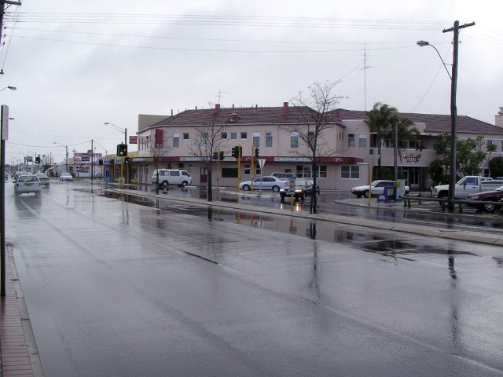
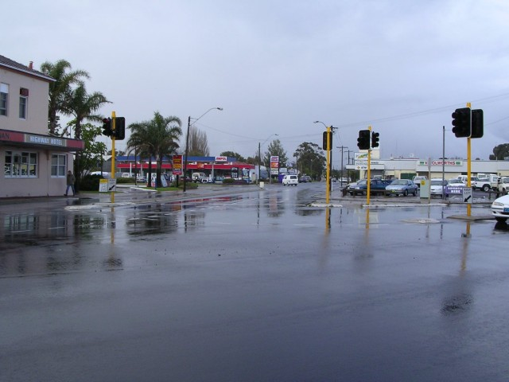
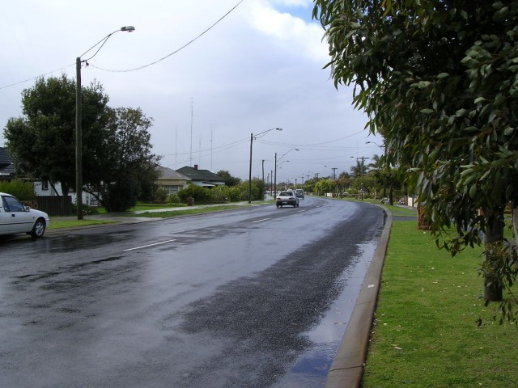
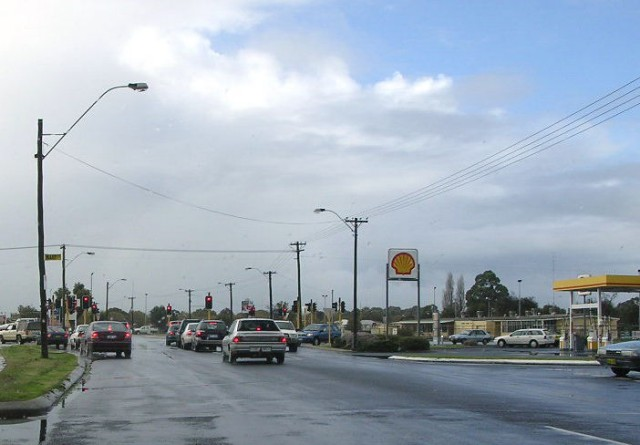
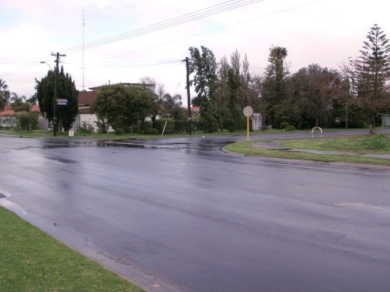

Numbers on the map represent the location where the photographs were taken. Scroll down to view the photographs.
Carey Park - Spencer Street via Forrest Avenue to Ecclestone Street
|| Contents || Spencer - Ecclestone | Frankel - Blair | Clarke - Constitution || Home ||
Numbers on the map represent the location where the photographs were taken. Scroll
down to view the photographs.
Return to racingcircuits.net's Photo Archive Main Index

1 - The right turn from Spencer Street into Forrest Avenue at the Highway
Hotel.

2 - Entering Forrest Avenue.

3 - Kink on Forrest Avenue.

4 - Forrest Avenue.

5 - Right turn into Ecclestone Street.

6 - Ecclestone Street.
Photographs and Text ©Neil Fackerell. Reproduced here with kind permission.